I first took 30-40 images of the ArUco tags with my iphone camera and zoom level 1. I used these images to calibrate the camera using cv2.calibrateCamera(). I got the following camera matrix [[3068, 0, 1420,] [0, 3027, 2084], [0, 0, 1]] with distance coefficients [0.32, -1.82, 0.003, -0.011, 2.872]. I then solved the PnP problem and displayed the images in Viser, as seen below:
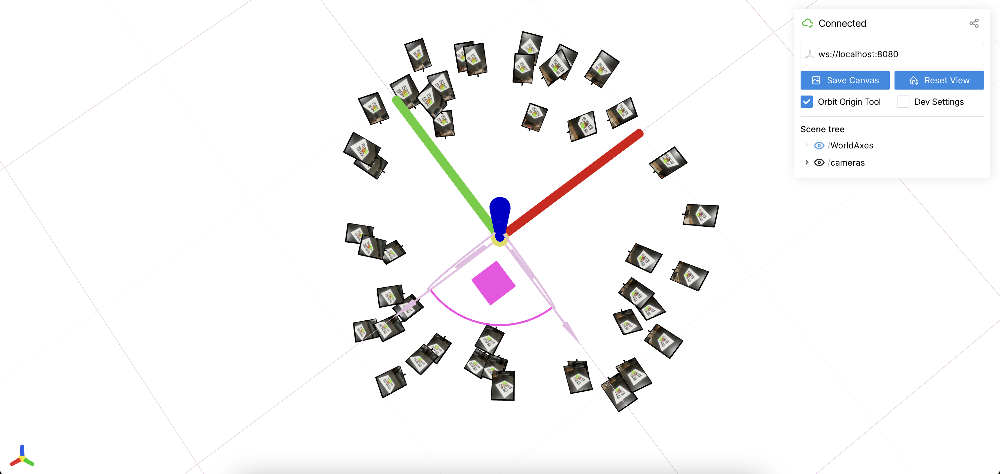
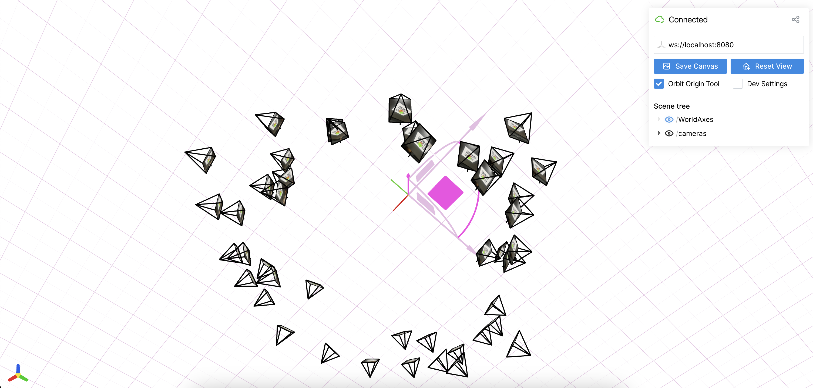
My model architecture takes in 42-dimensional coordinates as an input, and it predicts 3 channel RGB values using a sigmoid activation function. It has two hidden layers, which each have a width of 256 and ReLU activation functions. The positional encoder uses 10 frequency bands with sin and cos, which expands the original 2D coordinates into 42-dimensions. I trained using the Adam optimizer with a lr of 1e-2, and used 3000 iterations with batches of 10000 randomly sampled pixels for each step. Below is the training progression on the fox image.
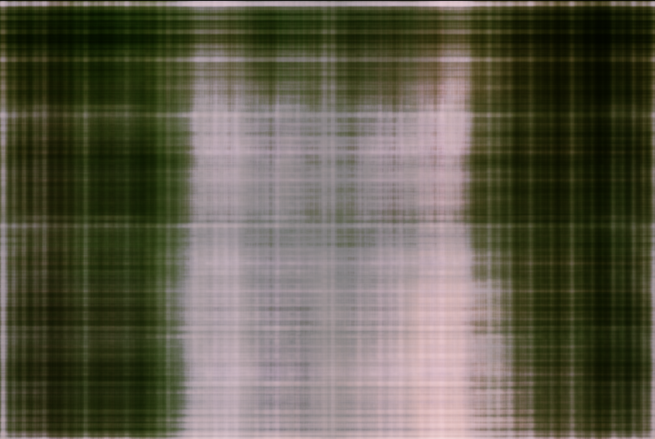
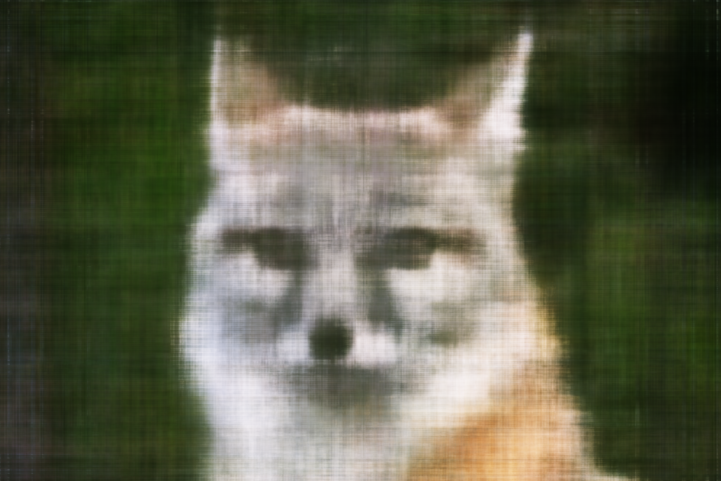
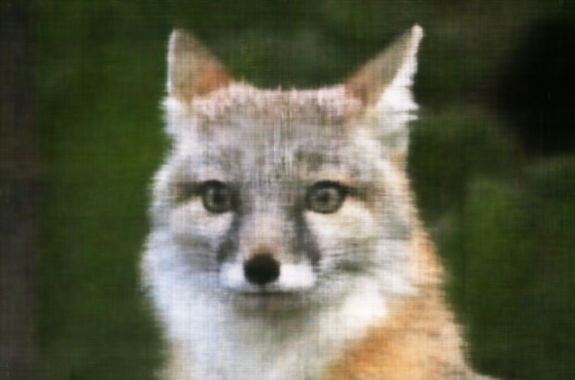
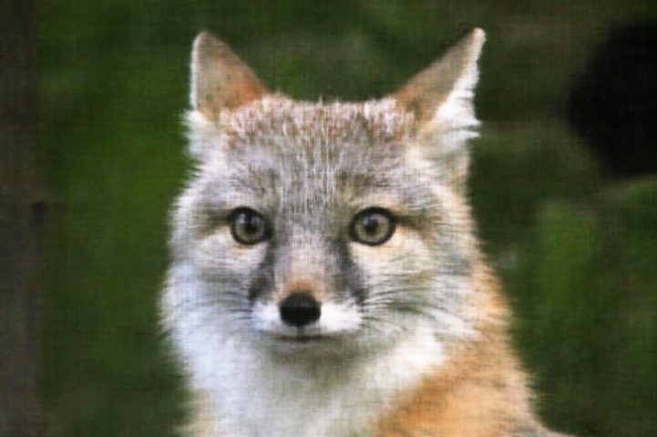
I also applied this process to an image of Lebron, as seen below.
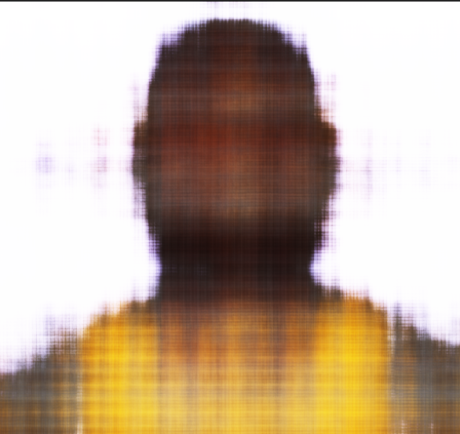
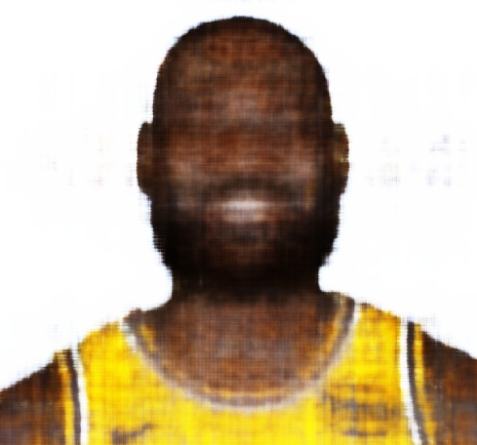
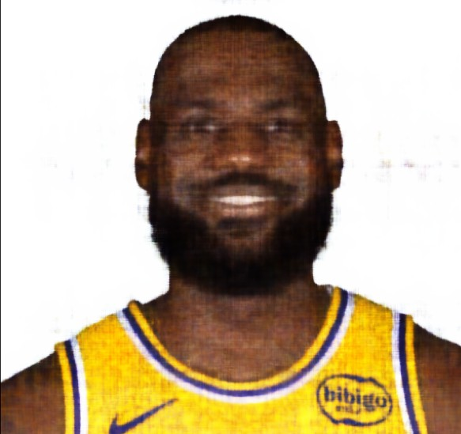
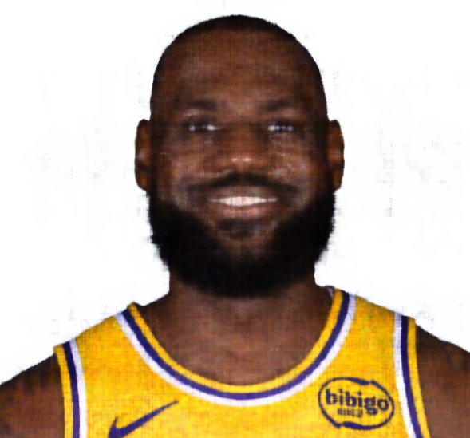
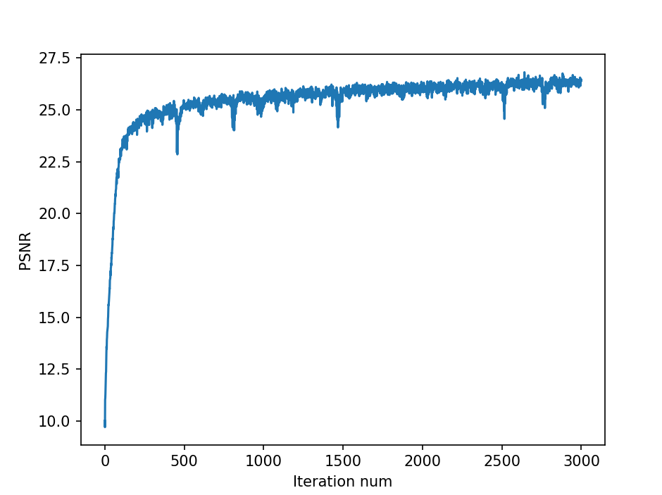
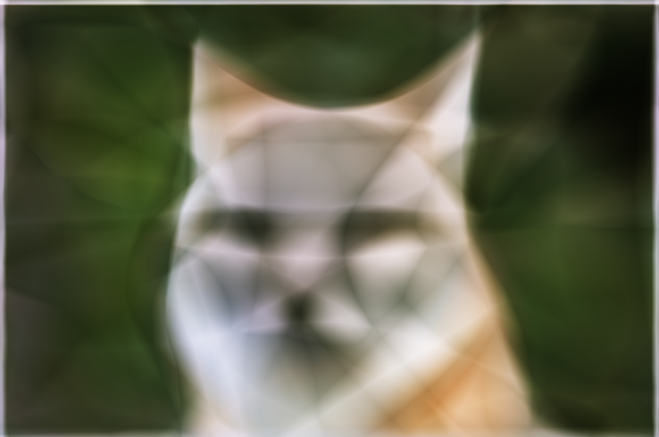
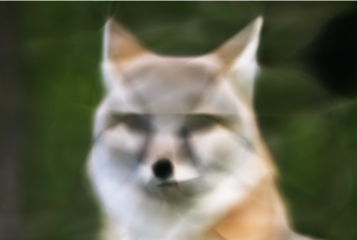
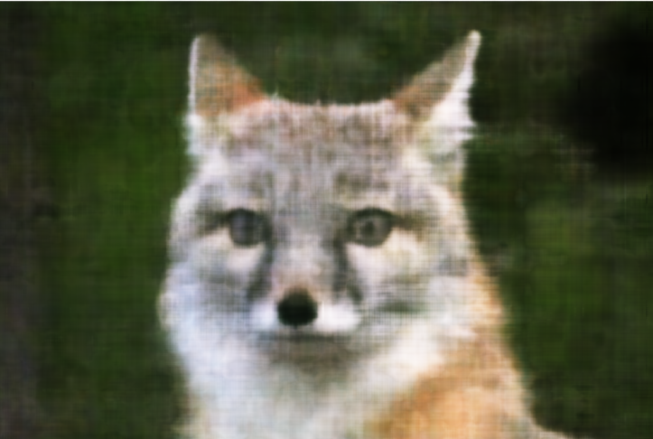
I visualized the setup by first generating rays for each camera. To do this, I converted its position into a 3D direction using the camera intrinsics, and then transformed that direction into the world space using a camera-to-world matrix. Then, I sampled 3D points along each ray for Nerf to query. I then put this into a RaysData class, which computes each pixel's ray, origin, direction, and pixel color, and the dataloader just returns random rays and their sampled points for training. I used 64 samples per ray, and below are the visualizations of the rays for the lego truck.
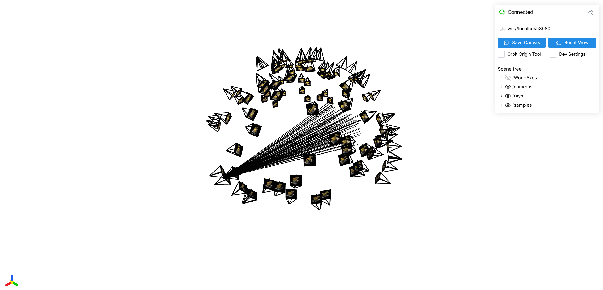
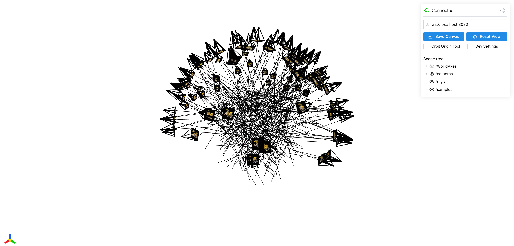
Next, I created an MLP similar to what was described in the spec. It has two sub-networks, the first of which takes a 63-dimensional PE encoded point, passes it through 5 fully connected layers, concatenates the input, and then goes through another 5 fully connected layers. The other sub-network takes in a 256-dimensional density feature concatenated with a 27-dimensional view direction and feeds it thorugh a 128 unit MLP to output RGB values. Below are the progress images for the lego NeRF, as well as the PSNR and loss charts.
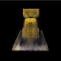
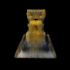
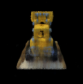
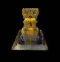
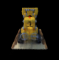
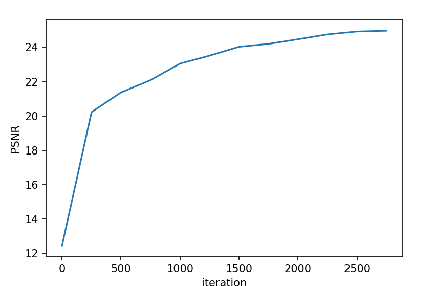
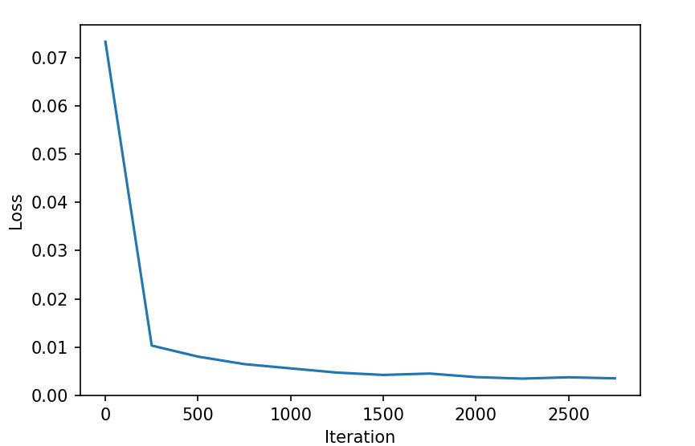
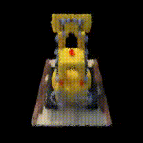
To do NeRF on a custom dataset, I trained a model made up of two fully connected MLP blocks (each 5 layers of 256 units with ReLU), a final linear layer for density, and a separate color MLP that takes in the learned features and encoded view directions to predict the RGB value. It computes rays from camera intrinsics/extrinsics, samples 64 points per ray, and feeds them through the network to get a sigma value and an RGB value. I repeated this process for 10000 random rays, and I evaluated training based on PSNR and MSE loss.
I found it straightforward to get NeRF working on the Lafufu dataset. Below is my Lafufu dataset loss, progress pics, and gif.
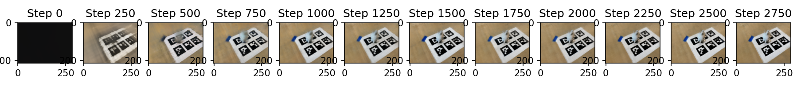
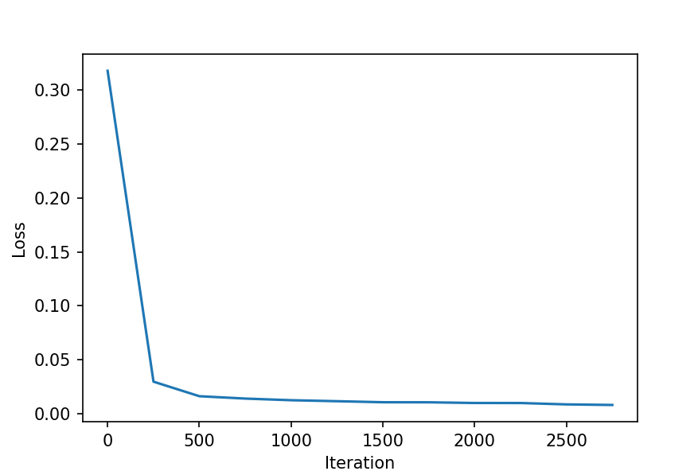
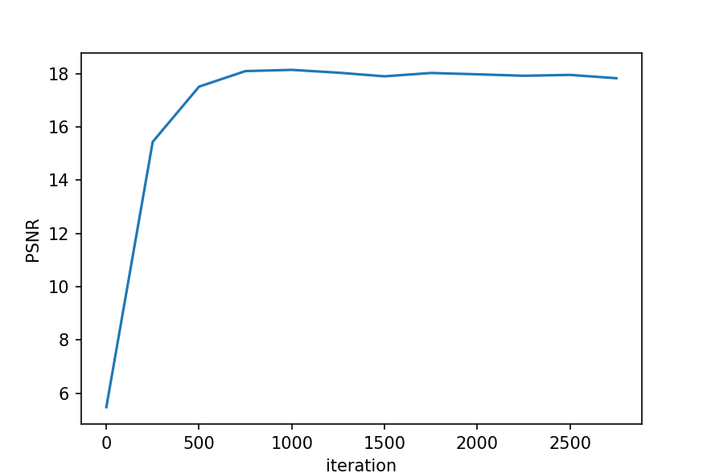
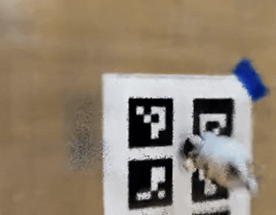
For my custom dataset though, I wasn't able to produce reliable results with the gif. As seen below, the training progress images seen reasonable.
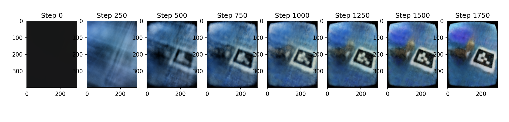
However, I was not able to make the gif rendering work as expected. One reason for this could be that my methods of taking the pictures was not consistent, and that the distance between the object and the camera deviated from image to image. Another reason could be that some of the images have the ArUco tag blocked by the image, though I filtered out these images and attempted training again, with similar results.
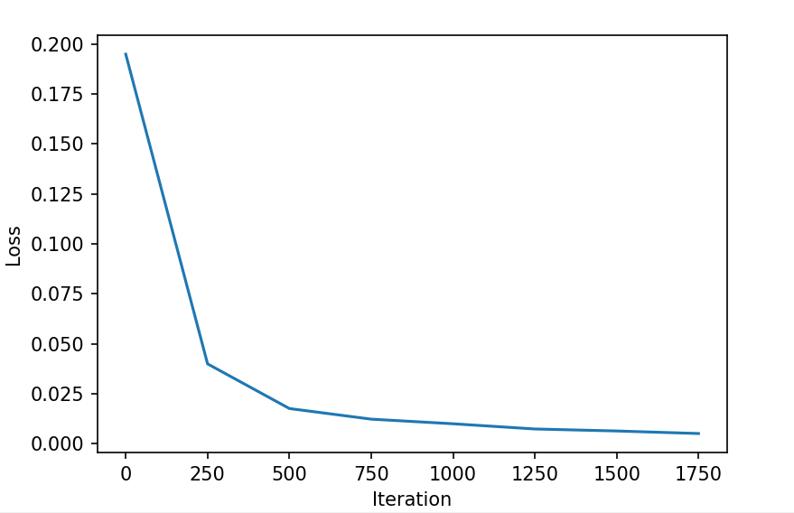
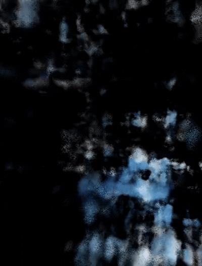